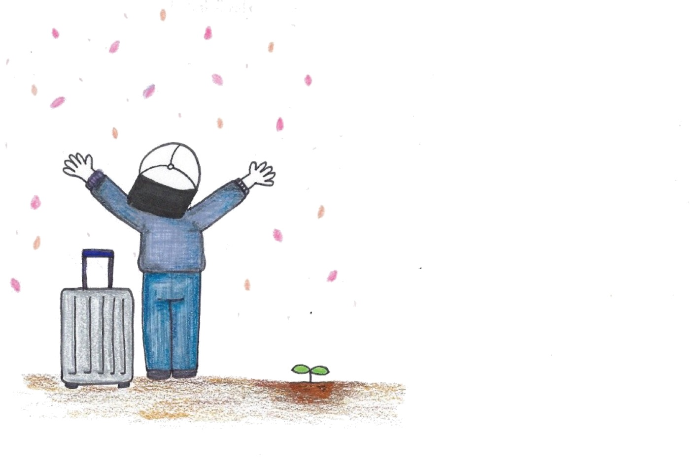

What we do together
Learning, travelling, telling our stories — and blooming again.
TTOBOM Class

You come to learn. You leave with friends.
Young adults who have been through cancer gather to share what they know — a skill, a recipe, a piece of hard-won advice.
The class is the excuse. The two hours spent sitting next to someone who has been through the same year — that is the point.
Every class only happens once. Do the same thing again, and you’ll be waiting for a new class to open — so there’s always something new. We started this so people could pick back up a skill cancer treatment made them set aside, share it, and use it to begin the next chapter of their life.
The time after class matters just as much. Sitting together, understanding each other, becoming friends — that’s the real reason this class exists.
Past classes


New classes are announced on Instagram — message us there or via Naver Cafe to join. Sessions are held in Korean.
AAM Campaign — the travel project
TTOBOM began with a journey.
Surviving late-stage cancer left one conviction: the will to hold on needs something to hold on to.
For TTOBOM that something was travel. “When this is over, I’m going there.” That one sentence gets a person through chemotherapy.
80 days around the world, and 300 photobooks
One year after coming through terminal cancer, our founder set off alone on an 80-day journey around the world. Those photographs became a book: ‘I See U Again’.
It is not a book to read but a book to write in — chemotherapy makes long reading hard, so the pages are photographs and blank lines for your own list of places. Send us the list you write, and one day we might choose you to actually go together.
It was crowdfunded on a buy-one-give-one basis, and the donated copies went to three university hospitals in Seoul — 100 books each.
- 80 daystravelling alone
- 300 booksgiven to 3 hospitals



For TTOBOM, travel plays that part.
The road he walked alone, we now walk together
From the bucket lists people sent back, we chose companions and actually went. People who had endured treatment learned to surf, and spelled out I SEE U AGAIN on the sand.
- First Chiang Mai, Thailand first trip abroad
- Second Donghae first trip in Korea
- Third Ski camp
- Fourth Namhae summer camp
Then the pandemic paused everything. We are getting ready to go again.


Cheer UP, Spring
We talk, we sing, we cry a little.
Mention cancer and the conversation stops. So we put music around it.
What matters is the audience. When people who have had cancer and people who haven’t sit in the same room and hear the same story, the stigma comes apart without anyone arguing about it.
The first three nights were with indie musicians — several of whom had a family member who’d been through cancer too. Each night took one of the four seasons in TTOBOM’s logo — summer, fall, winter, spring — as its theme.
The fourth night was with M.B crew, world-champion b-boys. They too had cancer experiencers close to them, and joined in to play and talk. This time the audience wasn’t only cancer experiencers — the general public came too, breaking down stigma and making it a place where everyone could be free.


TTOTTOBOM TV
In the voice of someone who went first.
A YouTube channel of interviews with people who came through hardship, carrying accurate information alongside real experience. Videos are in Korean.
Programs run on support
Every one of these moments is made possible by donors.
Join the spring of young adults.